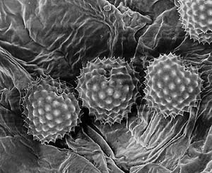

Six Natural Allergy Remedies
Breathe easier with medically proven allergy treatments.
By Lynn Keiley
August/September 2006
As the golden days of summer begin to fade, thoughts often turn to the last sun-ripened tomatoes and bringing in the harvest. But if you or someone you know are among the more than 26 million Americans who suffer from seasonal allergies (or the estimated 50 million who suffer from all types of allergies), you may be focused more on pollen counts, the first freeze, and stocking up on tissues and allergy meds than on harvesting tomatoes.
Members of the sniffling, sneezing and itching allergy demographic typically rely on numerous drugs and sprays for relief - often with mixed results. Many pharmaceutical treatments relieve sneezing and itching, but do little to treat congestion, and vice versa. In fact, at a recent meeting of the American College of Allergy, Asthma and Immunology, Dr. William E. Berger reported that nearly a third of allergy patients think their medications don’t work. Plus, pharmaceutical remedies are often expensive and frequently come with unwanted side effects, such as drowsiness and nasal irritation. The sedative effects of these drugs can impair driving ability and cause a mental disconnect that many users find irritating.
Annual bouts with pollen aren’t just uncomfortable, they also take a toll on mental well-being. Studies have shown that during ragweed season, allergy sufferers often experience a general sense of fatigue - especially mental fatigue - and are more prone to feelings of sadness. People who suffer from allergies also are up to 14 times more likely to experience migraine headaches than those who don’t have allergies.
Given these statistics, you might want to pull the covers over your head and wait until the whole season blows over. But it is possible to step outdoors safely without first loading up on allergy medications, even when ragweed is in full bloom. Here are several natural alternatives that are medically proven to help control allergies and help you breathe easier, even when pollen counts are at their worst.
Understanding Allergies
When you understand what’s happening during allergy attacks, treating them naturally seems like plain common sense. First, picture a grain of pollen - it looks something like a spiny sea urchin (see photo 3 in Image Gallery). Now imagine this prickly invader entering your nasal passages and latching onto soft mucous membranes. These mucous membranes line our bronchial and nasal passages and contain immune cells, called mast cells, which are loaded with histamines. Receptors sit on top of these mast cells, and when an allergen trigger - such as pollen, mold or pet dander - lands on top of the receptor, it alerts the mast cells, which respond by releasing histamine and other chemicals. The histamine initiates a series of reactions designed to help the body get rid of the intruder, including sneezing, watery eyes and itching. For some people, particularly those with asthma, this reaction may also include swelling in the bronchial tubes that makes it difficult to breathe.
Natural Remedies
Most allergy medications attempt to treat the symptoms your body instigates to get rid of the allergen. But doesn’t it make more sense to shore up your defenses before your body goes into attack mode? Many of the natural remedies discussed below are designed to prevent a reaction before it occurs.
A few minor lifestyle changes also can go a long way toward keeping symptoms under control:
- Avoid using window fans to cool rooms, because they can pull pollen indoors.
- Keep windows closed when driving, using the air conditioner if necessary, to avoid allergens.
- Limit your time outdoors when ragweed pollen counts are highest - from mid-August until the first frost.
Neti Pots. What could be simpler than rinsing away allergens with saltwater? Neti pots, small vessels shaped like Aladdin’s lamp (see the Image Gallery), have been used in India for thousands of years to flush the sinuses and keep them clear. It’s an idea that takes some getting used to for most Westerners, but it’s a bit like using nasal spray. A little douse of saltwater can rinse away those prickly pollen grains and help treat allergies and other forms of sinus congestion.
Just last year, an Italian study published in the International Archives of Allergy and Immunology found that nasal flushing was a mild and effective way to treat seasonal allergies in children, and markedly reduced their use of antihistamines.
You could simply use your cupped hand instead of a neti pot to rinse sinuses, but netis are inexpensive, and many people find them much easier to use. To flush your sinuses, mix a quarter to a half teaspoon of noniodized table salt into a cup of lukewarm water and pour it into the pot. (You can adjust the amount of salt, depending on what feels most comfortable.) Lean over a sink with your head slightly cocked to one side, then put the spout of the neti into one nostril and allow the water to drain out the other nostril. Use about half of the solution, then repeat on the other side, tilting your head the opposite way. Gently blow out each nostril to clear them completely. Neti pots are widely available online and at natural food stores. Use your pot about twice a day during allergy season, especially in the morning and after spending time outdoors. You also can use a neti pot before bed to prevent snoring caused by allergies and promote optimal overnight breathing.
Quercetin. A natural plant-derived compound called a bioflavonoid, quercetin helps stabilize mast cells and prevents them from releasing histamine. Quercetin also is a natural antioxidant that helps mop up molecules called free radicals that cause cell damage, which can lead to cancer. Citrus fruits, onions, apples, parsley, tea, tomatoes, broccoli, lettuce and wine are naturally high in quercetin, but allergy sufferers will most likely need to use supplements to build up enough of this compound to prevent attacks. The recommended dosage is about 1,000 milligrams a day, taken between meals. It’s best to start treatment six weeks before allergy season. Those with liver disease shouldn’t use quercetin, so please consult your doctor before using this or any other supplement - especially if you are pregnant or nursing.
Allergy Fighting Foods. A German study, published in the journal Allergy, found that participants who ate foods rich in omega-3 fatty acids were less likely to suffer allergy symptoms than those who didn’t regularly eat these foods. Omega-3s help fight inflammation and can be found in cold-water fish, walnuts and flaxseed oil, as well as grass-fed meat and eggs.
To help keep airways clear when pollen counts are high, add a dash of horseradish, chili peppers or hot mustard to your food - all act as natural, temporary decongestants. It’s also a good idea to avoid foods that you’re slightly allergic to until the air clears. Fighting off allergies can render the body hypersensitive to those foods, causing more severe reactions than usual.
Stinging Nettle. If you decide you need an antihistamine but want a natural option, stinging nettle (Urtica dioica) behaves in much the same way as many of the drugs sold to treat allergies, but without the unwanted side effects of dry mouth and drowsiness. Nettle actually inhibits the body’s ability to produce histamine. It’s a common weed in many parts of the United States, but the most practical medicinal form is a freeze-dried extract of the leaves sold in capsules. Studies have shown that taking about 300 milligrams daily will offer relief for most people, although the effects may last only a few hours. You also can make your own tinctures or teas with stinging nettle. (Contact with the stinging hairs on fresh nettle can cause skin inflammation, so wear protective gloves when handling it.) For more on making your own herbal remedies, see Richo Cech’s Making Plant Medicine (Horizon Herbs, 2000).
Butterbur. Derived from a common weed in Europe, butterbur (Petasites hybridus) is another alternative to antihistamines, though it may be hard to find in the United States. In the days before refrigeration, its broad, floppy leaves were used to wrap butter during warm spells, hence the name butterbur. A Swiss study, published in British Journal of Medicine, found that butterbur was as effective as the drug cetirizine, the active ingredient in Zyrtec. Even though cetirizine is supposed to be a nonsedative antihistamine, researchers reported that it did cause drowsiness, though butterbur did not. Participants in the study took 32 milligrams of butterbur a day, divided into four doses. A word of caution though - butterbur is in the same family as ragweed, so it could worsen allergy symptoms in some cases. Effects of taking butterbur over a long period of time also are unknown.
Sublingual Immunotherapy. Specific immunotherapy, otherwise known as allergy shots, has been used widely to inject patients with diluted doses of certain allergens to help build immunity over time. However, allergy shots can take three to five years to be effective, and a small percentage of people suffer severe reactions to this treatment. Though it remains popular in North America, the practice fell out of favor in the United Kingdom during the late 1980s, when strict limitations were imposed after several adverse reactions occurred.
New studies have found a gentler way to acclimate the body to pollen and other allergens. The latest form of this therapy is called sublingual immunotherapy (SLIT), which has been used for the past 20 years in Europe. In SLIT treatments, patients put drops of a very small dose of the allergen (initially a 1:1,000 dilution) under the tongue for two minutes, then swallow. The daily therapy begins before peak pollen season for seasonal allergy sufferers, but also can be used to treat year-round allergies, though treatment must be specific to the type of allergen.
A recent study in the United Kingdom found that patients who used SLIT for two years were nearly seven times less likely to suffer runny noses, and almost three times less likely to experience sneezing, than those who took a placebo. Because an allergy extract has not been approved by the Food and Drug Administration for use in the United States, check with your doctor and insurance provider before considering SLIT therapy.
Whether you suffer from seasonal or ongoing allergies, these natural remedies should let you get out there and harvest those late tomatoes!
|
DANIJEL MICKA/STOCKPHOTO Allergies plague millions of people who often get only marginal relief from drugs that can have frustrating side effects. Natural remedies, however, often have fewer side effects and can combat allergic reactions to plants such as the notorious ragweed shown here. |
NATHAN BRYANT/BY THE PLANET To soothe allergy attacks, consider using neti pots. They are a mild and effective way to treat seasonal allergies. |
 DWIGHT KUHN When pollen grains, such as these from ragweed, enter your nasal passages and lodge onto mucous membranes, your body responds by producing histamine, which can cause allergy symptoms such as sneezing, itching and watery eyes. |
 LYNN KARLIN Freeze-dried extract from the leaves of stinging nettle works like an over-the-counter antihistamine, but without the unwanted side effects of dry mouth and drowsiness. |
|
|